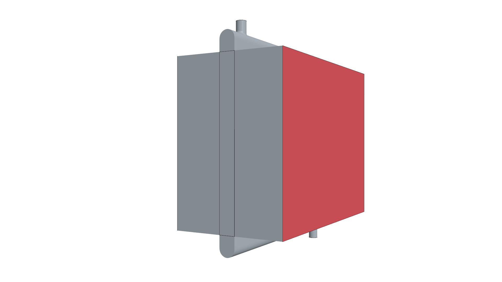
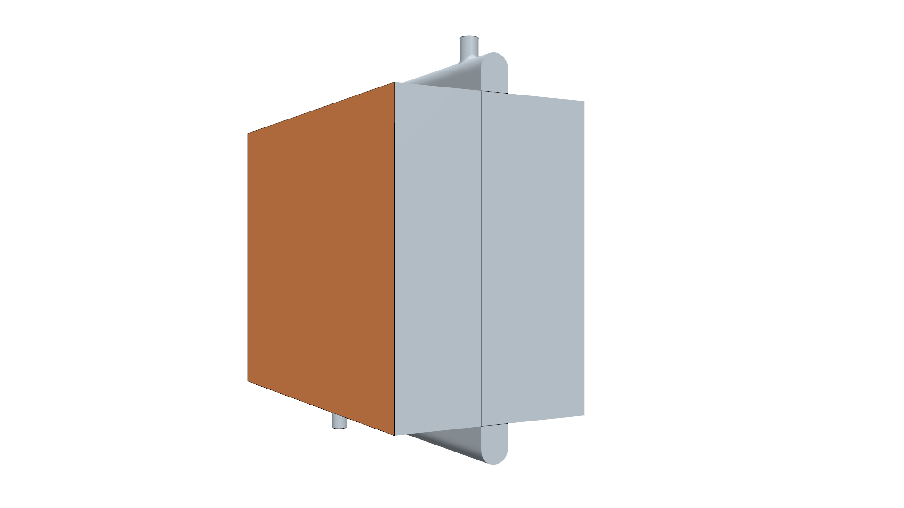
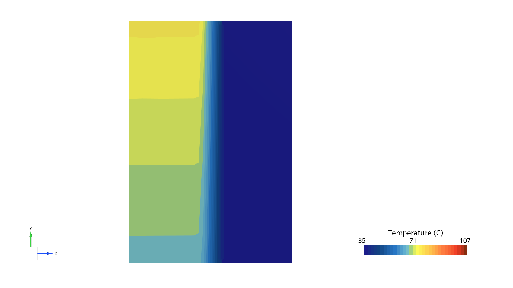
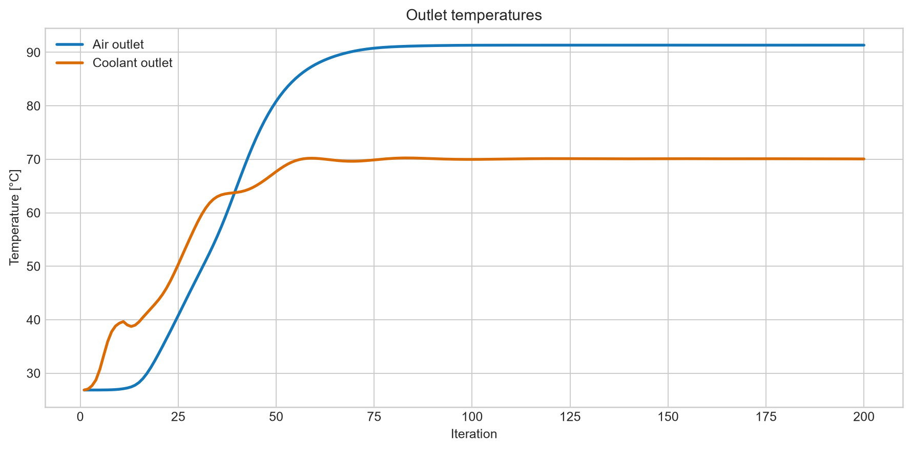

Energy equation
Temperature is transported with each fluid flow, enabling the cooling of the coolant and the warming of the air to be tracked through the system.
CFD case study · thermal management
A two-stream heat-exchanger model for studying how a car radiator transfers heat from engine coolant to the ambient airflow.

The objective
This project focuses on the modelling choices behind an automotive radiator: energy transport in two fluid streams, a porous representation of the core, region-to-region interfaces and a dual-stream heat-exchanger model. The final objective is to simulate the cooling of a hot coolant flow by incoming air.
01 — Thermal setup
The air-side and coolant-side domains are defined as separate regions. Their coupling through the radiator core is represented with a dual-stream heat exchanger, while interfaces provide the connection between the surrounding fluid regions and the core.
This structure makes it possible to represent the pressure loss and heat-transfer role of a dense fin-and-tube core without resolving every individual fin.

02 — Modelling approach
Temperature is transported with each fluid flow, enabling the cooling of the coolant and the warming of the air to be tracked through the system.
The complex internal geometry of the radiator is replaced by a porous region, capturing its bulk resistance and thermal exchange behaviour efficiently.
A dual-stream heat exchanger transfers energy between the air and coolant streams without requiring the detailed resolution of every tube and fin.


03 — Thermal response
Monitor data from the converged simulation show the expected thermal behaviour: the air gains heat while the coolant is cooled across the radiator.



What I learned
Thermal CFD is as much about connecting the right regions and models as it is about solving the flow.
A porous representation makes an automotive radiator tractable without resolving its full fin-and-tube geometry.
Well-defined interfaces are essential for a consistent transfer of flow and thermal information between regions.
Tracking both outlet temperatures and exchanged power provides a clear check on the physical response.
Car radiator thermal CFD study